Interview Lab · Competitive Programming
Coding interview questions
Twenty FAANG-frequency problems with interviewer intent, level bars, solutions, follow-ups, mistakes, and production examples.
This lab covers the highest-frequency coding interview problems across FAANG and late-stage startups — sourced from 2025–2026 interview report aggregations (Blind / LeetCode Discuss frequency lists, Amazon OAs, Google phones, Meta onsites). Each card is a full 25–40 minute practice: clarify → diagram → steps → code → follow-ups.
How to use it: Time yourself. Say the pattern name before coding. After you finish, close the card and re-explain the invariant from memory.
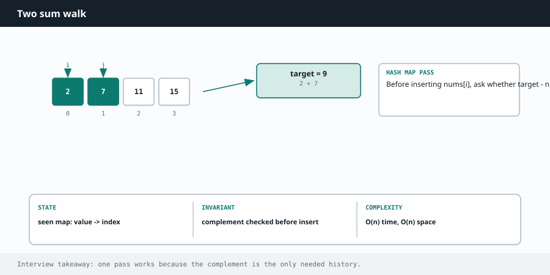
Related chapters: Arrays, Sliding window, Linked lists, Graphs, DP.
- Q1 Two Sum
- Q2 Longest substring without repeats
- Q3 Merge Intervals
- Q4 LRU Cache
- Q5 Number of Islands
- Q6 Course Schedule
- Q7 Coin Change
- Q8 Word Ladder
- Q9 Serialize / Deserialize Tree
- Q10 Trapping Rain Water
- Q11 Best Time to Buy/Sell Stock
- Q12 Minimum Window Substring
- Q13 Maximum Subarray (Kadane)
- Q14 Search in Rotated Sorted Array
- Q15 Top K Frequent Elements
- Q16 Meeting Rooms II
- Q17 Valid Parentheses
- Q18 Rotting Oranges
- Q19 Alien Dictionary
- Q20 Kth Largest Element
Q1. Two Sum
Given an array of integers nums and an integer target, return the indices of the two numbers that add up to target. Exactly one solution exists; you may not use the same element twice. Narrate brute force → optimal, then code.
Warmup that reveals whether you reach for hash maps instinctively instead of nested loops.
- Clarify indices vs values
- Brute → optimal narrative
- Self-pair edge case
- Complexity
| Level | Expectation |
|---|---|
| Junior | Working O(n) map solution |
| Mid | Clean code + edge cases + follow-ups |
| Senior | Discuss streaming / multi-pair variants |
| Staff | API design if generalized to k-sum service |
| Principal | Rarely asked; expect teaching clarity |
- Return indices or values? (indices — LeetCode default)
- Duplicates allowed in the array?
- Negative numbers? (yes — hash map still works)
- Guaranteed one answer, or return empty if none?
- Brute force: check every pair → O(n²). Say it, then improve.
- Insight: for value
xyou needtarget - x. Remember past values in a map value→index. - One pass: for each i, if need in map → return; else store nums[i]→i after the check (avoids self-pair).
- Complexity: time O(n), space O(n).
| i | x | need | seen | action |
|---|---|---|---|---|
| 0 | 2 | 7 | {} | miss → store 2→0 |
| 1 | 7 | 2 | {2:0} | hit → return [0,1] |
def two_sum(nums, target):
seen = {} # value -> index
for i, x in enumerate(nums):
need = target - x
if need in seen:
return [seen[need], i]
seen[x] = i
return []
int[] twoSum(int[] nums, int target) {
Map<Integer, Integer> seen = new HashMap<>();
for (int i = 0; i < nums.length; i++) {
int need = target - nums[i];
if (seen.containsKey(need)) return new int[]{seen.get(need), i};
seen.put(nums[i], i);
}
return new int[]{};
}
- All pairs / duplicates → frequency map or multiset.
- Sorted array → two pointers, O(1) extra space.
- Streaming input → same map, bound memory if needed.
- Return all pairs?
- Sorted array variant?
- Memory-constrained stream?
- Ad targeting join keys
- Deduping request IDs in gateways
- Amazon cart coupon matching patterns
Q2. Longest Substring Without Repeating Characters
Given a string s, find the length of the longest substring without repeating characters. Example: "abcabcbb" → 3 ("abc").
Tests sliding-window fluency — Meta/Amazon medium staple.
- Window invariant
- Last-seen index correctness
- Empty/all-unique edges
| Level | Expectation |
|---|---|
| Junior | Correct O(n) window |
| Mid | Articulate invariant |
| Senior | Variant: at most k distinct |
| Staff | Optimize for unicode/streams |
- ASCII / Unicode? (map works either way)
- Empty string → 0
- All unique → n; all same → 1
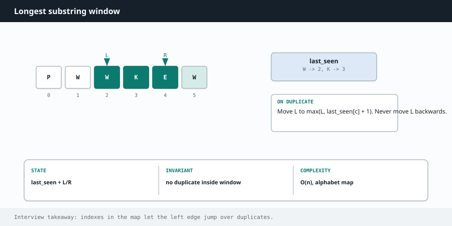
- Maintain window [left, right] that is always duplicate-free.
- Advance right. If s[right] was seen at index ≥ left, set left = last[ch] + 1.
- Update last[ch] = right; track best = max(best, right-left+1).
- Time O(n), space O(min(n, alphabet)).
def length_of_longest_substring(s):
last = {}
left = best = 0
for right, ch in enumerate(s):
if ch in last and last[ch] >= left:
left = last[ch] + 1
last[ch] = right
best = max(best, right - left + 1)
return best
- Longest with at most k distinct?
- Minimum window covering t?
- Session uniqueness checks
- Log tokenization windows
- Rate windows in analytics
Q3. Merge Intervals
Given intervals[i] = [start_i, end_i], merge all overlapping intervals and return the covering non-overlapping set.
Scheduling/calendar signal — sort + linear merge is the expected pattern.
- Sort justification
- Overlap definition
- Touching intervals
| Level | Expectation |
|---|---|
| Junior | Correct merge |
| Mid | Meeting Rooms II link |
| Senior | Online insert into merged list |
| Staff | Calendar product constraints |
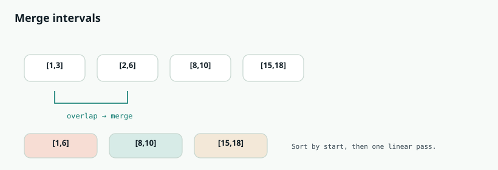
- Sort by start time — required for a single pass.
- Keep a "current" interval. If next.start ≤ current.end, current.end = max(ends). Else push current and start new.
- Touching intervals [1,2][2,3]: ask if they merge (usually yes with ≤).
- Time O(n log n), space O(n).
def merge(intervals):
intervals.sort(key=lambda x: x[0])
out = [intervals[0][:]]
for start, end in intervals[1:]:
if start <= out[-1][1]:
out[-1][1] = max(out[-1][1], end)
else:
out.append([start, end])
return out
- Insert Interval into an already-merged list (O(n), no full resort).
- Meeting Rooms II → min heap of end times / sweep line.
- Min removals to make non-overlapping → greedy by end.
- Insert interval?
- Min rooms?
- Min removals?
- Google Calendar free/busy
- AWS capacity reservation windows
- Ad flight dates
Q4. LRU Cache
Design LRUCache with get(key) and put(key, value) in O(1) average time. Evict the least recently used key when over capacity.
Highest cross-company design+code question — composition under O(1) constraints.
- Why map+DLL
- Draw structure
- Update vs insert
- Capacity-1
| Level | Expectation |
|---|---|
| Junior | OrderedDict OK if explained |
| Mid | Hand-rolled DLL |
| Senior | Thread-safety discussion |
| Staff | Distributed LRU / cache tiering |
| Principal | Multi-tier cache policy design |
- Capacity ≥ 1?
- get miss → -1
- put on existing key updates value AND recency
- Thread safety? (usually out of scope unless asked)
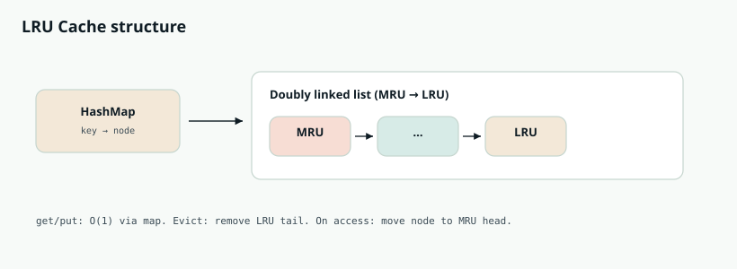
- Why both structures? Map → O(1) lookup. DLL → O(1) reorder / evict if you already have the node pointer.
- Sentinel head/tail simplify edge inserts/removes.
- get hit: unlink node, insert after head (MRU), return value.
- put: if key exists, remove old node; insert new at head; if size > capacity, remove tail.prev and delete from map.
- Draw the list on the whiteboard before coding helpers.
class Node:
__slots__ = ("key", "val", "prev", "next")
def __init__(self, key=0, val=0):
self.key, self.val = key, val
self.prev = self.next = None
class LRUCache:
def __init__(self, capacity):
self.cap, self.map = capacity, {}
self.head, self.tail = Node(), Node()
self.head.next, self.tail.prev = self.tail, self.head
def _remove(self, node):
node.prev.next = node.next
node.next.prev = node.prev
def _add_front(self, node):
node.next, node.prev = self.head.next, self.head
self.head.next.prev = node
self.head.next = node
def get(self, key):
if key not in self.map:
return -1
node = self.map[key]
self._remove(node); self._add_front(node)
return node.val
def put(self, key, value):
if key in self.map:
self._remove(self.map[key])
node = Node(key, value)
self.map[key] = node
self._add_front(node)
if len(self.map) > self.cap:
lru = self.tail.prev
self._remove(lru)
del self.map[lru.key]
- LFU?
- TTL?
- Concurrent access?
- Redis approximate LRU
- CDN edge caches
- CPU page cache intuition
Q5. Number of Islands
Given an m×n grid of '1' (land) and '0' (water), return the number of islands. Land connects 4-directionally (not diagonally).
Grid DFS/BFS literacy — Amazon/Google classic.
- Component counting
- Visited discipline
- 4 vs 8 connectivity
| Level | Expectation |
|---|---|
| Junior | DFS flood fill |
| Mid | BFS + recursion limits |
| Senior | Variants (max area) |
| Staff | Union-find framing |
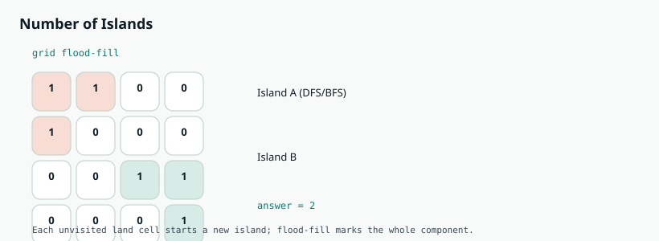
- Scan every cell. On unvisited '1', increment count.
- Flood-fill (DFS or BFS) to mark the whole component visited (flip to '0' or use a visited set).
- Never revisit. Prefer BFS if recursion depth worries them.
- Time O(m·n), space O(m·n) worst case.
def num_islands(grid):
if not grid:
return 0
rows, cols = len(grid), len(grid[0])
def dfs(r, c):
if r < 0 or c < 0 or r >= rows or c >= cols or grid[r][c] != "1":
return
grid[r][c] = "0"
for dr, dc in ((1, 0), (-1, 0), (0, 1), (0, -1)):
dfs(r + dr, c + dc)
count = 0
for r in range(rows):
for c in range(cols):
if grid[r][c] == "1":
count += 1
dfs(r, c)
return count
- Max area of island
- Number of closed islands
- Pacific Atlantic water flow (multi-source DFS)
- Surrounded regions
- Max area?
- Closed islands?
- Pacific Atlantic?
- Map region labeling
- Image connected components
- Game fog-of-war floods
Q6. Course Schedule (can finish all courses?)
numCourses labeled 0..n-1. prerequisites[i]=[a,b] means take b before a. Return true iff you can finish all courses (DAG / no cycle).
Cycle detection / topo sort — dependency systems.
- Graph model
- Kahn vs DFS colors
- Order vs boolean
| Level | Expectation |
|---|---|
| Junior | canFinish correct |
| Mid | Return order (II) |
| Senior | Parallel semesters |
| Staff | Build systems analogy |
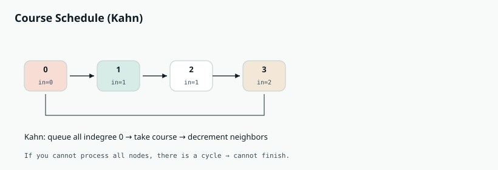
- Model: directed edge b→a (b unlocks a). Finish iff DAG.
- Kahn: compute indegrees; queue all indegree 0; pop and decrement neighbors; count processed nodes.
- If processed == numCourses → true; else cycle → false.
- DFS alternative: 0/1/2 colors; back-edge to "in stack" = cycle.
from collections import deque, defaultdict
def can_finish(num_courses, prerequisites):
graph = defaultdict(list)
indeg = [0] * num_courses
for a, b in prerequisites:
graph[b].append(a)
indeg[a] += 1
q = deque([i for i in range(num_courses) if indeg[i] == 0])
taken = 0
while q:
cur = q.popleft()
taken += 1
for nxt in graph[cur]:
indeg[nxt] -= 1
if indeg[nxt] == 0:
q.append(nxt)
return taken == num_courses
- Course Schedule II → return any valid order (Kahn visit order).
- Parallel semesters → longest path in DAG / level BFS.
- Course Schedule II?
- Minimum semesters?
- CI pipeline deps
- Package managers
- Airflow/DAG schedulers
Q7. Coin Change
coins of various denominations, total amount. Return fewest coins to make amount, or -1 if impossible. Unlimited supply of each coin.
Unbounded knapsack DP — distinguishes DP from greedy.
- State definition
- Why greedy fails
- Bottom-up loops
| Level | Expectation |
|---|---|
| Junior | dp[] works |
| Mid | Explain counterexample |
| Senior | Coin Change II contrast |
| Staff | Memory optimize |

- Define dp[x] = fewest coins to make x; dp[0]=0; else ∞.
- For x from 1..amount: for each coin c≤x: dp[x]=min(dp[x], dp[x-c]+1).
- Why not greedy? Counterexample coins=[1,3,4], amount=6 → greedy 4+1+1=3 coins, optimal 3+3=2.
- Time O(amount·|coins|), space O(amount).
def coin_change(coins, amount):
INF = amount + 1
dp = [0] + [INF] * amount
for x in range(1, amount + 1):
for c in coins:
if c <= x:
dp[x] = min(dp[x], dp[x - c] + 1)
return dp[amount] if dp[amount] != INF else -1
Coin Change II counts combinations — different transition order/meaning. Do not confuse them in the interview.
- Number of combinations?
- Limited coin counts?
- Change-making POS
- Resource allocation DP
- Game economy crafting
Q8. Word Ladder
beginWord → endWord, changing one letter at a time; each intermediate in wordList. Return length of shortest transformation sequence (words in path), or 0 if impossible.
BFS shortest path in an implicit graph — Google classic.
- Model as graph
- Neighbor generation
- Visited discipline
| Level | Expectation |
|---|---|
| Junior | BFS correct |
| Mid | Wildcard buckets optimize |
| Senior | Bidirectional BFS |
| Staff | Production dictionary scale |
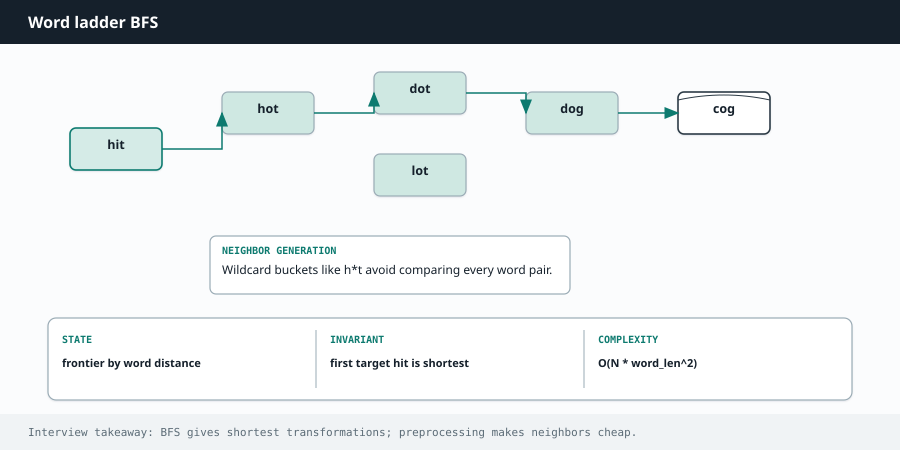
- Each word is a node; edge if Hamming distance 1.
- BFS from beginWord; distance = words in path so far.
- Neighbor gen: for each position try a–z; check set membership.
- Remove word when enqueued to avoid revisits.
- If endWord not in wordList → 0 immediately.
- Time O(N · L · 26); bidirectional BFS is a strong follow-up.
from collections import deque
def ladder_length(begin_word, end_word, word_list):
words = set(word_list)
if end_word not in words:
return 0
q = deque([(begin_word, 1)])
while q:
word, dist = q.popleft()
if word == end_word:
return dist
for i in range(len(word)):
for ch in "abcdefghijklmnopqrstuvwxyz":
nxt = word[:i] + ch + word[i + 1 :]
if nxt in words:
words.remove(nxt)
q.append((nxt, dist + 1))
return 0
- Return the path?
- Bidirectional BFS?
- Typo correction graphs
- Chemical edit distance search
- Knowledge graph hops
Q9. Serialize and Deserialize Binary Tree
Design serialize(root)→string and deserialize(string)→tree. Format is your choice; the pair must be invertible.
Encoding/decoding + tree fluency — Meta favorite.
- Invertible format
- Null markers
- Empty tree
| Level | Expectation |
|---|---|
| Junior | BFS serialize works |
| Mid | Preorder alternative |
| Senior | Compact encodings |
| Staff | Schema evolution talk |

- Pick BFS level-order with explicit '#' nulls (interview-friendly).
- Serialize: queue; append values / '#'; join with commas.
- Deserialize: rebuild root from first token; for each node consume next two tokens as left/right children.
- Handle empty tree and single-node trees explicitly.
- Preorder+nulls also works — mention both.
from collections import deque
class Codec:
def serialize(self, root):
if not root:
return ""
q, out = deque([root]), []
while q:
node = q.popleft()
if node:
out.append(str(node.val))
q.append(node.left)
q.append(node.right)
else:
out.append("#")
return ",".join(out)
def deserialize(self, data):
if not data:
return None
vals = data.split(",")
root = TreeNode(int(vals[0]))
q = deque([root])
i = 1
while q:
node = q.popleft()
if vals[i] != "#":
node.left = TreeNode(int(vals[i]))
q.append(node.left)
i += 1
if vals[i] != "#":
node.right = TreeNode(int(vals[i]))
q.append(node.right)
i += 1
return root
- BST serialize without nulls?
- Compress?
- Protobuf-like tree payloads
- UI component trees
- AST persistence
Q10. Trapping Rain Water
n non-negative heights (bar width 1). How much water can the elevation map trap after raining?
Hard two-pointer / geometry reasoning under pressure.
- Water formula
- Two-pointer justification
- O(1) space
| Level | Expectation |
|---|---|
| Junior | Prefix arrays OK |
| Mid | Two pointers |
| Senior | Monotonic stack |
| Staff | Generalize to 2D |

- Water at i limited by min(tallest left, tallest right) − height[i].
- Prefix/suffix max arrays → clear O(n) time / O(n) space version — start here if needed.
- Two pointers: maintain left_max, right_max; always advance the side with the smaller max (that side's water is fully determined).
- Time O(n), space O(1). Monotonic stack is another valid approach.
def trap(height):
if not height:
return 0
lo, hi = 0, len(height) - 1
left_max = right_max = water = 0
while lo < hi:
if height[lo] < height[hi]:
left_max = max(left_max, height[lo])
water += left_max - height[lo]
lo += 1
else:
right_max = max(right_max, height[hi])
water += right_max - height[hi]
hi -= 1
return water
- Return trapped indices?
- Histogram largest rectangle?
- Hydrology sims
- Capacity planning metaphors
- Image pooling analogies
Q11. Best Time to Buy and Sell Stock
prices[i] is the stock price on day i. Choose one day to buy and a later day to sell to maximize profit. Return the max profit (0 if no profit).
One-pass scan with running state — easiest DP gateway.
- Single transaction constraint
- All decreasing → 0
| Level | Expectation |
|---|---|
| Junior | Correct one pass |
| Mid | Relate to Kadane |
| Senior | Multi-transaction variants |
| Staff | Online trading constraints |
- One transaction only (buy once, sell once).
- Must sell after buy.
- Empty / length-1 → 0.
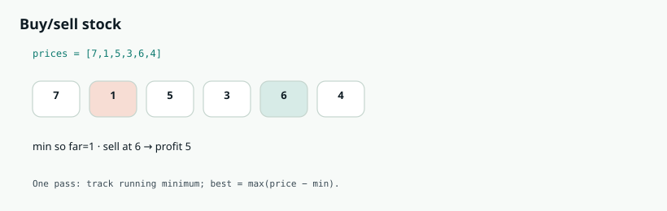
- Brute: try every buy/sell pair O(n²) — reject it.
- Keep min_price seen so far while scanning left→right.
- At each price, candidate = price − min_price; track best.
- Time O(n), space O(1).
def max_profit(prices):
min_price, best = float("inf"), 0
for p in prices:
min_price = min(min_price, p)
best = max(best, p - min_price)
return best
- LC 122 unlimited transactions → sum all uphill segments.
- LC 123 at most 2 → DP states.
- Cooldown with cooldown → state machine DP (Amazon favorite).
- Unlimited transactions?
- Cooldown + cooldown?
- Simple PnL calculators
- Promo best-discount windows
Q12. Minimum Window Substring
Given strings s and t, return the smallest substring of s that covers every character in t (including duplicates). Return "" if impossible.
Hard window with counts — Meta speed round staple.
- need/have counters
- Minimal window shrink
- Duplicates in t
| Level | Expectation |
|---|---|
| Junior | Correct window |
| Mid | O(1) validation |
| Senior | Unicode / streaming |
| Staff | Library API design |
- Build need counts for t; need_unique = number of distinct chars.
- Expand right; update have counts; when a char's have hits need, increment formed.
- While formed == need_unique, shrink left; record best window.
- Time O(|s| + |t|), space O(alphabet).
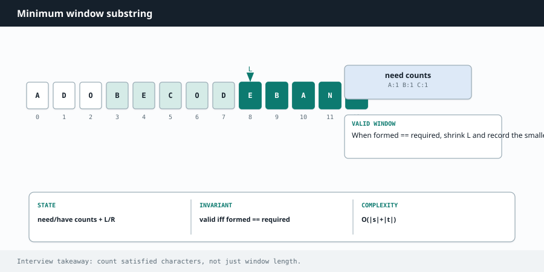
from collections import Counter
def min_window(s, t):
need = Counter(t)
missing = len(need)
have = {}
best_len, best = float("inf"), ""
left = 0
for right, ch in enumerate(s):
have[ch] = have.get(ch, 0) + 1
if ch in need and have[ch] == need[ch]:
missing -= 1
while missing == 0:
if right - left + 1 < best_len:
best_len = right - left + 1
best = s[left : right + 1]
left_ch = s[left]
have[left_ch] -= 1
if left_ch in need and have[left_ch] < need[left_ch]:
missing += 1
left += 1
return best
- Permutation in string?
- Find all anagram starts?
- Log field extractors
- DNA motif covering
- Search snippet covering queries
Q13. Maximum Subarray (Kadane)
Find the contiguous subarray with the largest sum and return that sum.
Kadane — Amazon OA classic for array DP.
- Extend vs restart
- All-negative arrays
| Level | Expectation |
|---|---|
| Junior | Kadane code |
| Mid | Return indices |
| Senior | 2D maximal rectangle |
| Staff | Streaming version |
- At each index: either extend previous run or start fresh at nums[i].
- best_ending = max(nums[i], best_ending + nums[i]).
- Track global max. Handles all-negative by picking the largest element.
- Time O(n), space O(1).
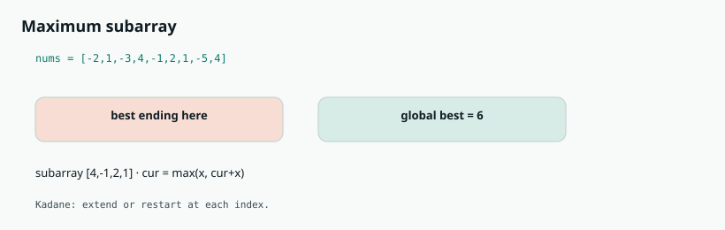
def max_sub_array(nums):
best = cur = nums[0]
for x in nums[1:]:
cur = max(x, cur + x)
best = max(best, cur)
return best
- Return the actual subarray indices.
- Circular maximum subarray.
- 2D Kadane (maximal rectangle sum) — Google follow-up.
- Circular max?
- Return subarray bounds?
- Max streak metrics
- Signal processing windows
Q14. Search in Rotated Sorted Array
nums was sorted ascending then rotated at an unknown pivot. Search for target in O(log n). Distinct values.
Binary search with a twist — Meta/Amazon favorite.
- Identify sorted half
- Invariant
- Duplicates follow-up
| Level | Expectation |
|---|---|
| Junior | Distinct rotated search |
| Mid | With duplicates |
| Senior | Find min in rotated |
| Staff | General rotated structures |
- Standard binary search frame. Mid always sits in a half that is sorted.
- If nums[lo] ≤ nums[mid]: left half sorted. If target in [lo, mid), search left; else right.
- Else right half sorted — symmetric check.
- Draw an example like [4,5,6,7,0,1,2] every time.
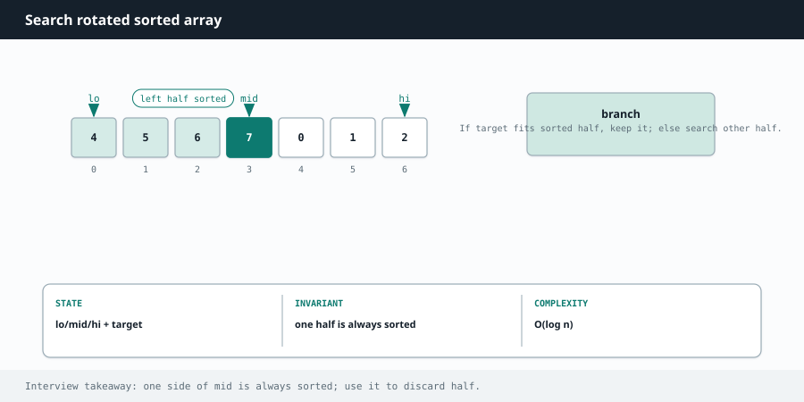
def search(nums, target):
lo, hi = 0, len(nums) - 1
while lo <= hi:
mid = (lo + hi) // 2
if nums[mid] == target:
return mid
if nums[lo] <= nums[mid]:
if nums[lo] <= target < nums[mid]:
hi = mid - 1
else:
lo = mid + 1
else:
if nums[mid] < target <= nums[hi]:
lo = mid + 1
else:
hi = mid - 1
return -1
- Find minimum?
- Duplicates allowed?
- Rotated ring buffers
- Time-wrapped schedules
Q15. Top K Frequent Elements
Given an integer array, return the k most frequent elements. Order of the answer does not matter.
Heap vs bucket tradeoff — universal medium.
- Count then select
- O(n log k) vs O(n)
- Stability not required
| Level | Expectation |
|---|---|
| Junior | Heap solution |
| Mid | Bucket sort |
| Senior | Quickselect talk |
| Staff | Distributed top-k |
- Count frequencies in a map O(n).
- Option A: min-heap of size k → O(n log k).
- Option B (often preferred): bucket sort by frequency → O(n).
- Say both; implement one cleanly.
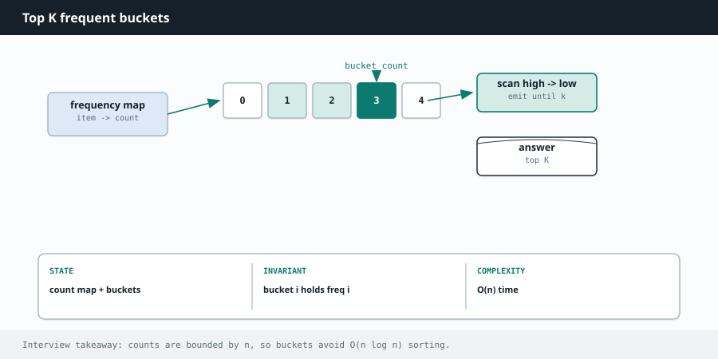
from collections import Counter
def top_k_frequent(nums, k):
freq = Counter(nums)
buckets = [[] for _ in range(len(nums) + 1)]
for val, c in freq.items():
buckets[c].append(val)
out = []
for c in range(len(buckets) - 1, 0, -1):
for val in buckets[c]:
out.append(val)
if len(out) == k:
return out
return out
- Top-k by other metrics?
- Approximate top-k?
- Trending topics
- Error-code dashboards
- Search query popularity
Q16. Meeting Rooms II
Given meeting time intervals [start, end), find the minimum number of conference rooms required.
Interval + heap — Meta premium classic.
- Sort by start
- Reuse rule
- Peak rooms
| Level | Expectation |
|---|---|
| Junior | Heap solution |
| Mid | Sweep line |
| Senior | Online bookings |
| Staff | Resource packing product |
- Sort meetings by start time.
- Min-heap stores end times of rooms in use.
- If next start ≥ earliest end, reuse (pop); else allocate (push).
- Answer = max heap size during the scan (or final size if you track peak).
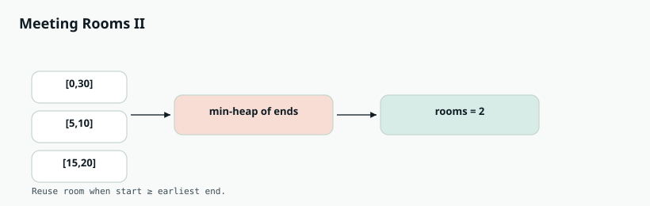
import heapq
def min_meeting_rooms(intervals):
if not intervals:
return 0
intervals.sort(key=lambda x: x[0])
heap = [] # end times
for start, end in intervals:
if heap and start >= heap[0]:
heapq.heappop(heap)
heapq.heappush(heap, end)
return len(heap)
Merge Intervals / Insert Interval / Non-overlapping — same family. Sweep line with +1 at start and −1 at end also works.
- Merge intervals link?
- Max concurrent online?
- Meeting room products
- Cloud VM concurrent capacity
- Call-center staffing
Q17. Valid Parentheses
Given a string containing just '()[]{}', determine if the input string is valid: open brackets closed by the same type in the correct order.
Stack literacy warmup across companies.
- Push/pop matching
- Empty stack rules
| Level | Expectation |
|---|---|
| Junior | Correct validator |
| Mid | Min remove to valid |
| Senior | Generate parentheses |
| Staff | Parser talk |
- Scan left→right. Push opening brackets.
- On closing: stack must be non-empty and top must match.
- End with empty stack.
- Time O(n), space O(n).
def is_valid(s):
pairs = {")": "(", "]": "[", "}": "{"}
stack = []
for ch in s:
if ch in pairs.values():
stack.append(ch)
elif ch in pairs:
if not stack or stack[-1] != pairs[ch]:
return False
stack.pop()
else:
return False
return not stack
- Longest valid parentheses (Hard).
- Minimum remove to make valid (Meta).
- Generate parentheses (backtracking).
- Longest valid?
- Min add/remove?
- IDE bracket matchers
- Config/JSON validators
- Template engines
Q18. Rotting Oranges
Grid of 0 (empty), 1 (fresh), 2 (rotten). Each minute, any fresh orange 4-adjacent to a rotten one becomes rotten. Return minutes until all fresh are rotten, or -1 if impossible.
Multi-source BFS — Amazon graph/grid favorite.
- Queue all sources
- Level = time
- Impossible case
| Level | Expectation |
|---|---|
| Junior | BFS correct |
| Mid | In-place mutation |
| Senior | 0-1 BFS variants |
| Staff | Epidemic models |
- Enqueue all initially rotten cells (multi-source BFS).
- Count fresh oranges.
- BFS level-by-level; each level = 1 minute; rot neighbors.
- If fresh remains → -1; else minutes (careful: last wave may add a minute — track correctly).
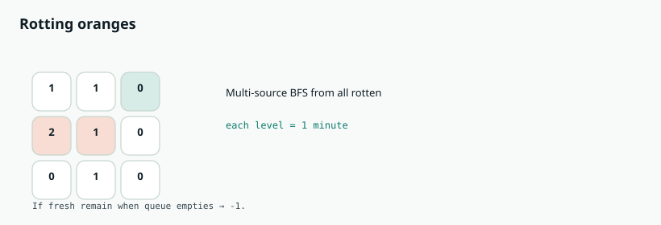
from collections import deque
def oranges_rotting(grid):
rows, cols = len(grid), len(grid[0])
q, fresh = deque(), 0
for r in range(rows):
for c in range(cols):
if grid[r][c] == 2:
q.append((r, c))
elif grid[r][c] == 1:
fresh += 1
minutes = 0
while q and fresh:
for _ in range(len(q)):
r, c = q.popleft()
for dr, dc in ((1, 0), (-1, 0), (0, 1), (0, -1)):
nr, nc = r + dr, c + dc
if 0 <= nr < rows and 0 <= nc < cols and grid[nr][nc] == 1:
grid[nr][nc] = 2
fresh -= 1
q.append((nr, nc))
minutes += 1
return minutes if fresh == 0 else -1
- Walls and gates?
- Shortest path in grid?
- Content freshness propagation
- Infection/simulation jobs
- Warehouse spill models
Q19. Alien Dictionary
You are given a list of words sorted lexicographically in an alien language. Derive any valid order of unique letters. Return "" if invalid.
Build graph from constraints — Meta/Google hard closer.
- Edge from consecutive words
- Invalid prefix case
- Cycle → empty
| Level | Expectation |
|---|---|
| Junior | Build edges + Kahn |
| Mid | All invalid cases |
| Senior | Unique vs any order |
| Staff | Grammar induction talk |
- Compare consecutive words; first differing chars give an edge earlier→later.
- Invalid if word A is prefix of longer preceding word ("abc" before "ab").
- Build graph + indegrees; Kahn BFS for a valid order.
- If cycle / not all letters processed → "".
from collections import defaultdict, deque
def alien_order(words):
graph = defaultdict(set)
indeg = {c: 0 for w in words for c in w}
for w1, w2 in zip(words, words[1:]):
if w1.startswith(w2) and w1 != w2 and len(w1) > len(w2):
return ""
for a, b in zip(w1, w2):
if a != b:
if b not in graph[a]:
graph[a].add(b)
indeg[b] += 1
break
q = deque([c for c, d in indeg.items() if d == 0])
order = []
while q:
c = q.popleft()
order.append(c)
for nxt in graph[c]:
indeg[nxt] -= 1
if indeg[nxt] == 0:
q.append(nxt)
return "".join(order) if len(order) == len(indeg) else ""
- Multiple valid orders?
- Verify order against words?
- Locale collation debugging
- Build order from logs
- Schema evolution ordering
Q20. Kth Largest Element in an Array
Find the kth largest element in an unsorted array. Note it is the kth largest in sorted order, not the kth distinct.
Selection algorithms — heap vs quickselect signal.
- kth largest vs smallest
- Heap size k
- Average O(n) option
| Level | Expectation |
|---|---|
| Junior | Heap |
| Mid | Quickselect |
| Senior | Worst-case linear |
| Staff | Distributed quantile |
- Min-heap of size k: push all; pop when size > k; peek is answer O(n log k).
- Quickselect (Hoare): average O(n) — mention for strong signal.
- Sorting is O(n log n) — acceptable start, then optimize.
import heapq
def find_kth_largest(nums, k):
heap = []
for x in nums:
heapq.heappush(heap, x)
if len(heap) > k:
heapq.heappop(heap)
return heap[0]
K Closest Points to Origin (LC 973) — same heap pattern with distance.
- K closest points?
- Running median?
- Latency percentile approx
- Leaderboard cutoffs
- Priority aging